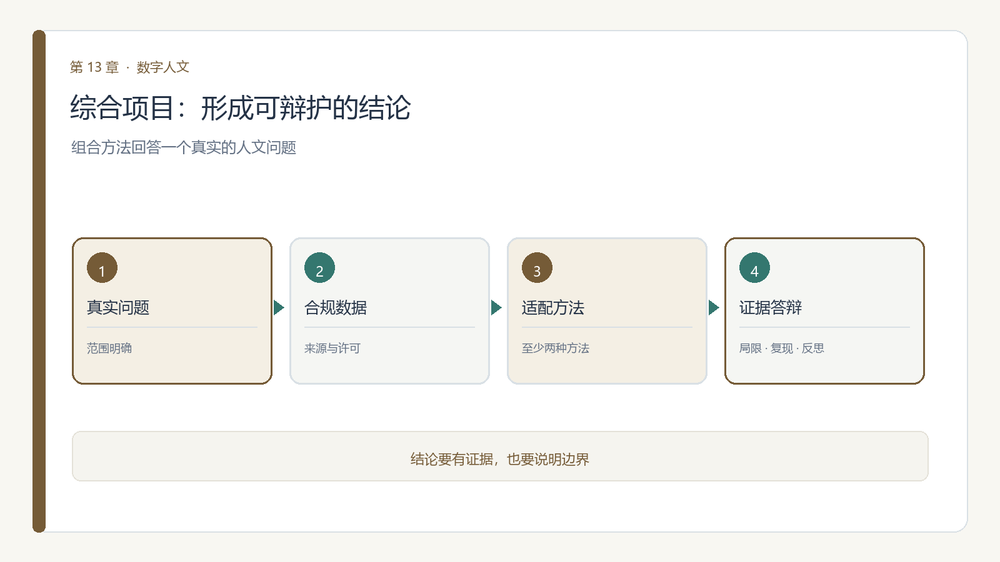

第 13 章 综合项目与课程反思
学习目标：完成本章后，你应能（1）围绕真实人文问题组合至少两种方法；（2）完成数据、方法、产出与反思的可复现闭环；（3）形成可答辩的结题报告；（4）说明研究结论的证据、局限与伦理边界。

13.0 课程思政融入
课程思政
思政融入（课程思政）：综合项目的最终落点，是把所学服务于国家文化数字化战略与中华优秀传统文化传承创新。无论你选择文本、图像、空间还是图谱，都请记得：方法越强，越要用于守文脉、聚人心、兴文化。愿你们的研究成果，既经得起学术检验，也对得起这片土地上的文明与人民。
思政案例（课程思政示范案例 / AI 思政课 知识库）：可呼应人民日报《推动人工智能全方位赋能千行百业》“自立自强、突出应用导向”，以及施一公《人工智能时代，教育何为》的育人之问——让成果服务于国家文化数字化与文明传承。
13.1 从"做实验"到"做研究"
前十个模块你分别练了数据、Python、文本、可视化、网络、空间、图像、图谱、模型、大模型——每个都是"一块肌肉"。综合项目要求你把至少两块肌肉组合起来，回答一个具体的人文问题。例如"用文本挖掘 + 社会网络，看某总集里的师承网络如何随主题演变"，或"用图像处理 + 知识图谱，让一批碑拓可检索、可问答"。
13.2 选题方法：好选题 = 真问题 + 可得数据 + 适配方法
避免"为方法找数据"的本末倒置。一个可落地的选题清单（供起念）：
| 方向 | 示例问题 | 适配方法组合 |
|---|---|---|
| 文学 | 某流派诗人的交游与主题是否相关？ | 文本挖掘 + 社会网络 |
| 历史 | 某灾害在方志中的空间扩散规律？ | 空间人文 + 可视化 |
| 艺术 | 某类器物的纹饰风格聚类？ | 图像处理 + 机器学习 |
| 文献 | 某文集的人物关系能否问答？ | 知识图谱 + 大模型 RAG |
先问"我关心什么真问题"，再问"数据从哪来、方法怎么搭"。
理论13.3 四要素闭环（详解）
综合项目不是堆方法，而是走通一个可复现闭环，每要素都要有检查单：
- 数据：来源、许可、规模、字段是否清楚？（回看模块二审计表）
- 方法：为何选这两种方法？参数与假设是什么？（回看模块三~十一）
- 可视化/知识：产出是图、网络、图谱还是报告？是否"有标注、可解释"？（回看模块五修辞、模块六/九解释）
- 反思：方法答了什么、答不了什么？偏见与局限在哪？（贯穿各模块伦理坐标）
四要素缺一环，就不算"研究"，只是"演示"。
理论13.4 评价量规（Rubric）
结题按以下维度评定，提前对齐预期：
| 维度 | 权重 | 达标描述 |
|---|---|---|
| 问题真实性 | 20% | 提出具体、有价值的人文问题，非为方法凑数据 |
| 数据合规 | 15% | 来源/许可清晰，敏感数据已授权，引用规范 |
| 方法适配 | 25% | 方法选择有依据，参数可信，步骤可复现 |
| 产出与解释 | 25% | 图/网/图谱/报告"有标注、可解释"，结论不过界 |
| 反思与诚信 | 15% | 坦诚局限与偏见，AI 使用已声明，无伪造 |
13.5 答辩与结课寄语
结课以答辩收尾：你讲清"问题—数据—方法—结论—局限"五分钟，评委追问方法边界。数据科学给数字人文以规模与严谨；人文学科给数据科学以意义与节制。愿你在方法与人文学之间，既敢于计算，也懂得停下追问——这，就是这门课想留给你的东西。
13.6 本章小结与思考
一个可答辩的综合项目，应从真问题出发，以合规数据为基础，选择适配的方法，并让结论能够回到证据。方法组合不是目的；可复现、可解释、能说明局限，才使成果成为研究。
思考题
- 你的项目问题是否能被现有数据回答？还缺少哪些材料或授权？
- 组合的方法各自解决什么问题？它们的结果如何互相验证？
- 答辩时你会如何说明模型误差、样本缺失与结论边界？